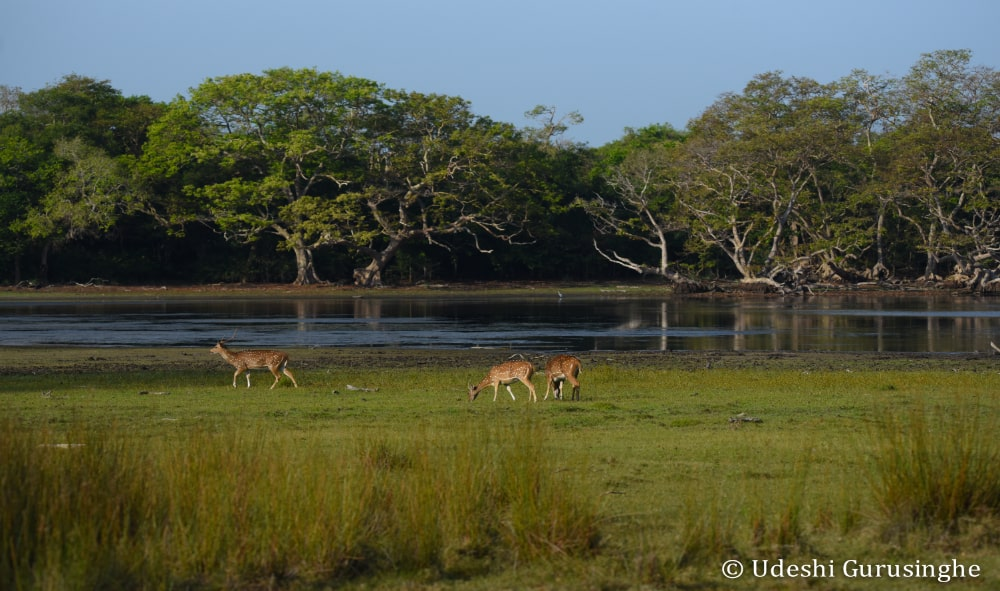

About Wilpattu National Park
Wilpattu National Park, situated in Sri Lanka's North Western Province, is the country's largest national park, covering approximately 1,317 square kilometers. It is renowned for its diverse ecosystems, ranging from dry tropical forests to wetlands, and its rich biodiversity.
Wildlife in Wilpattu
The park is home to a wide array of wildlife species, including the elusive Sri Lankan leopard, which is one of its main attractions. Other notable species include elephants, sloth bears, water buffalo, spotted deer, sambar deer, and a plethora of bird species such as painted storks, white ibis, and peafowl. The park's varied habitats support a thriving ecosystem, making it a paradise for nature enthusiasts and wildlife photographers.
.jpg)
Activities
Tourists visiting Wilpattu National Park can engage in various activities to explore its natural wonders:
1.Jeep Safaris: Jeep safaris are the most popular way to explore the park, offering visitors the opportunity to venture deep into its wilderness and encounter wildlife in their natural habitats.
2.Bird Watching: With its diverse birdlife, Wilpattu is a haven for bird watchers. Visitors can spot numerous bird species, including both resident and migratory birds, making it a birding hotspot.
3.Nature Walks: Guided nature walks provide visitors with a more intimate experience of the park's flora and fauna. Trained naturalists lead informative walks through designated trails, offering insights into the park's ecology and wildlife.
4.Camping: For those seeking an immersive wilderness experience, camping within the park is an option. Several designated camping sites allow visitors to spend a night under the starry skies, surrounded by the sights and sounds of the jungle.
Overall, Wilpattu National Park offers a captivating blend of natural beauty and wildlife diversity, providing visitors with unforgettable experiences and a deeper appreciation for Sri Lanka's natural heritage.